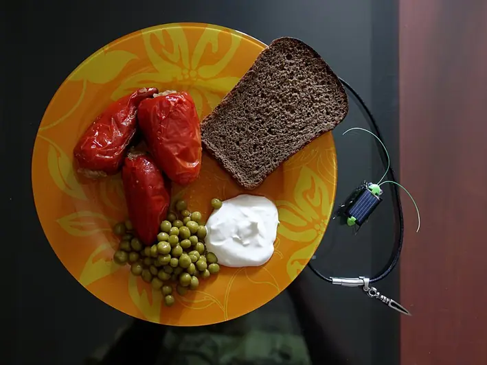

Фото: Vyacheslav Argenberg, CC BY 4.0

Фаршированные перцы
Болгарский перец с говяжьим фаршем и рисом, тушённый в томатном соусе
90 мин4 порц.597 ккал на порциюБ 29 · Ж 33 · У 46Русская кухня
Продукты на 4 порц.
- Перец болгарский8 шт
- Говяжий фарш500 г
- Рис0,5 стак.
- Лук репчатый2 шт
- Морковь2 шт
- Томатная паста2 ст. л.
- Вода3,5 стак.
- Растительное масло2 ст. л.
- Соль2 ч. л.
- Перец чёрный молотый2 щеп.
- Лавровый лист2 шт
- Укроп по желанию0,5 пучок
Как готовить
- Рис отварите в подсоленной воде 10 минут до полуготовности, откиньте и остудите.
- У перцев срежьте верхушку с плодоножкой и удалите семена.
- Одну луковицу мелко порубите и смешайте с фаршем, рисом, половиной соли и перцем.
- Плотно наполните перцы начинкой и поставьте вертикально в кастрюлю.
- Вторую луковицу и тёртую морковь обжарьте на масле на среднем огне 5 минут. Добавьте томатную пасту, воду, оставшуюся соль и лавровый лист, доведите до кипения.
- Залейте перцы соусом, накройте крышкой и тушите на слабом огне 45-50 минут.
- Перцы готовы, когда стенки мягкие, а рис в начинке разварился. Посыпьте укропом при подаче.
Совет. Ставьте перцы в кастрюлю плотно друг к другу, тогда они не упадут и начинка не вывалится. Соус должен покрывать их хотя бы на две трети.